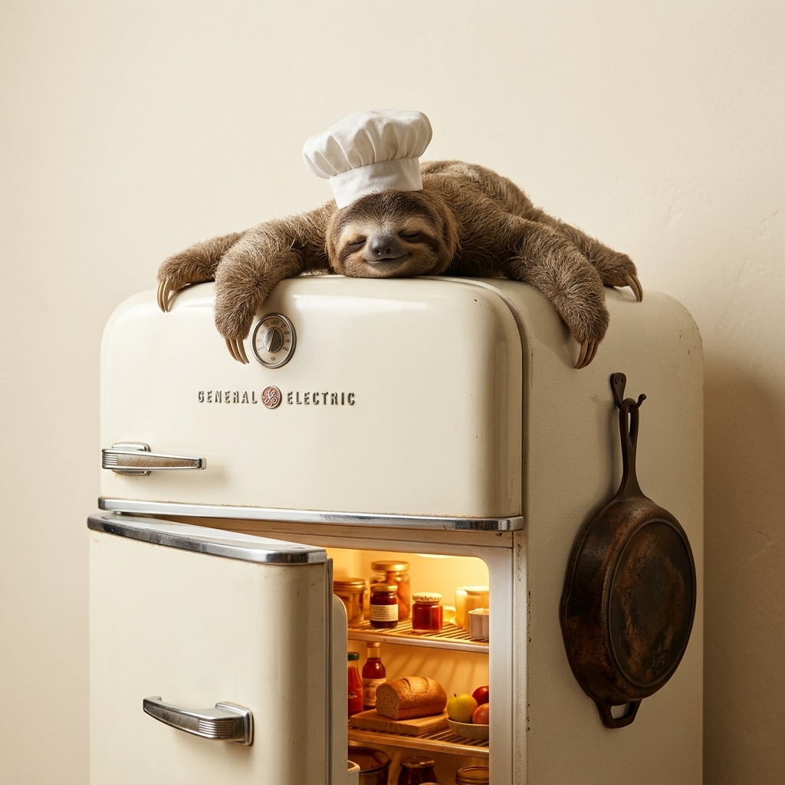

Dinner for people who are too tired to stand up.
Random dying vegetables, cold eggs, and stale bread synthesized into uncompromisingly lazy 1-pan or microwave calories. Zero chopping boards. Zero vertical posture past 4 minutes. Eat straight from the iron vessel so you never look at the sink again.

Toss whatever is dying in your vegetable drawer.
Enter expired groceries. SlothFridge feeds the vector directly into TabPFN's prior-data fitted engine to predict your standing time and utensil penalty.
The mathematical defense of couch arbitrage. Why washing dishes is a scam, and how TabPFN cuts cognitive dread by 87.4%.
OPEN THESIS →Interactive self-drawing effort curves, Gemma 2 lazy steps, and preset recipes like the 1-Pan Slump and Mug-Drop.
OPEN RECIPES →Hands-free audio walkthroughs powered by ElevenLabs turbo streaming with George's slow, deadpan voice.
OPEN AUDIO →